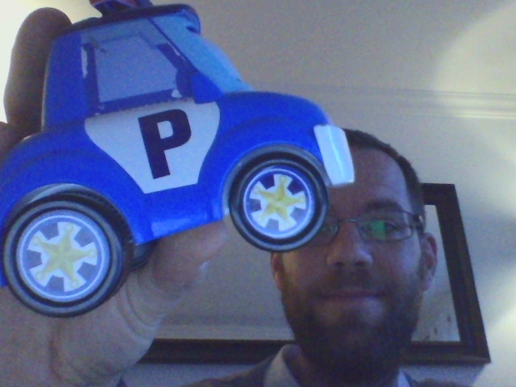
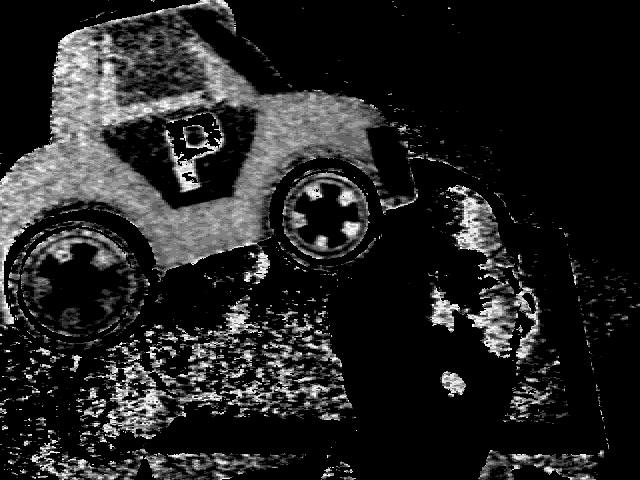
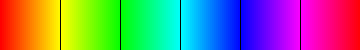
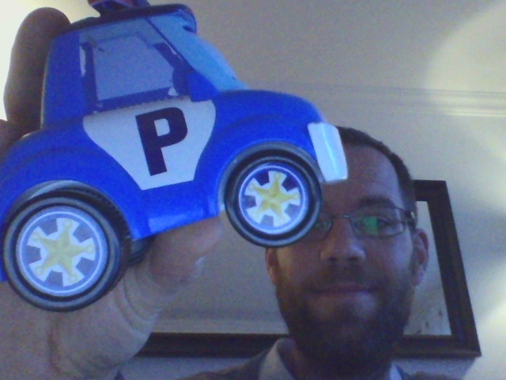
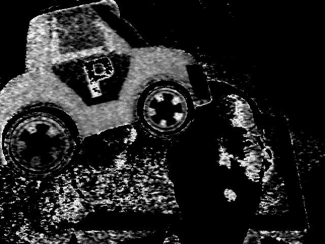

color_filter
Overview
This modules provides a node color-filter-hsv-node which takes a colored image and produces a gray scale image. The filter works in the HSV color space. It filters out pixels that have a too low value or saturation. Then it operates in one of two modes, performing a filter on the Hue or setting all the remaining pixels to 255.
Given a color input image $in$, the node computes the filtered grayscale image $filter$ as following. The parameters of the filter are $h_0$, $\sigma_h$, $v_{min}$, $s_{min}$ and the mode selected with the boolean dontcare. Consider the $i$-th pixel and denote $h_i, s_i, v_i$ the HSV component of the pixel. Then:

and if we select the dontcare mode, we get :
Below is a colored representation with a hue from 0 to 180.

Given a color input image $in$, the node computes the filtered grayscale image $filter$ as following. The parameters of the filter are $h_0$, $\sigma_h$, $v_{min}$, $s_{min}$ and the mode selected with the boolean dontcare. Consider the $i$-th pixel and denote $h_i, s_i, v_i$ the HSV component of the pixel. Then:
- If $s_i \leq s_{min}$ or $v_i \leq v_{min}$, then $filter_i = 0$
- otherwise :
- if dontcare=1, then $filter_i = 255$
- otherwise : $filter_i = f(h_i, h_0, \sigma_h)$
- if $d = \min(|h - h_0|, H - |h - h_0|) \leq \sigma_h$, then $f(h) = \frac{\sigma_h - d}{\sigma_h}$
- otherwise, $f(h) = 0$

and if we select the dontcare mode, we get :
Below is a colored representation with a hue from 0 to 180.
ROS integration
The node interface
The color_filter package provides a single node : color-filter-hsv-node. It can be tested with the launch file :
The communication with the node is realized by topics. The topic are the following ones:
roslaunch color_filter color-filter-demo.launchIn addition to the filter node, the package provides the message HSVParams which has the following fields:
| Field name | Type | Meaning |
|---|---|---|
| hue | int | Center of the hue filter $h_0$ |
| hue_tol | int | Width of the hue filter $\sigma_h$ |
| min_value | int | Minimal value for the value of the HSV of a pixel to be considered $v_{min}$ |
| min_saturation | int | Minimal value for the saturation of the HSV of a pixel to be considered $s_{min}$ |
| dontcare | bool | If true, all the pixels with at least min_value and min_saturation are set to 255; If false, the image is filtered with respect to the hue |
| Name | Message | Direction | Meaning |
| in | sensor_msgs/Image | subscribe | input color image |
| params | color_filter/HSVParams | subscribe | Parameters of the HSV filter |
| filtered | sensor_msgs/Image | publish | filtered image |
examples
Switching to red whiteboard marker color:
rostopic pub -1 /color_filter/params color_filter/HSVParams -- 5 10 25 110 falseSwitching to blue whiteboard marker color:
rostopic pub -1 /color_filter/params color_filter/HSVParams -- 116 10 25 110 false